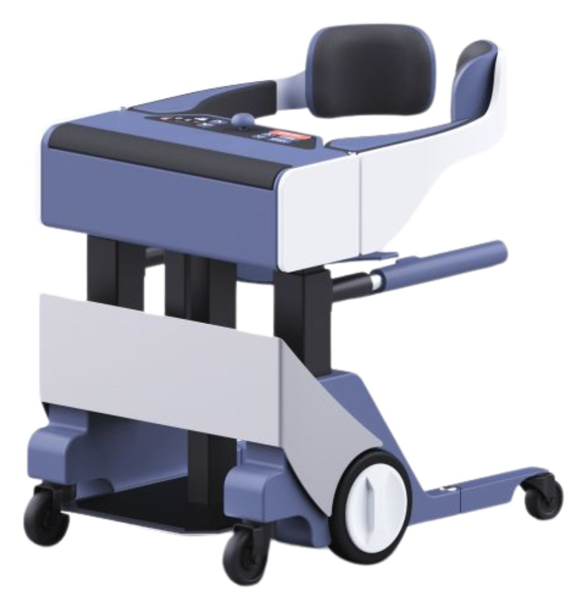
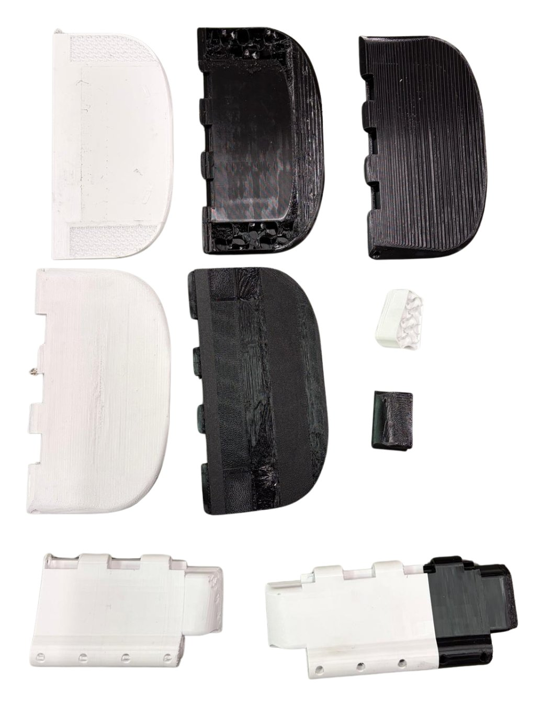
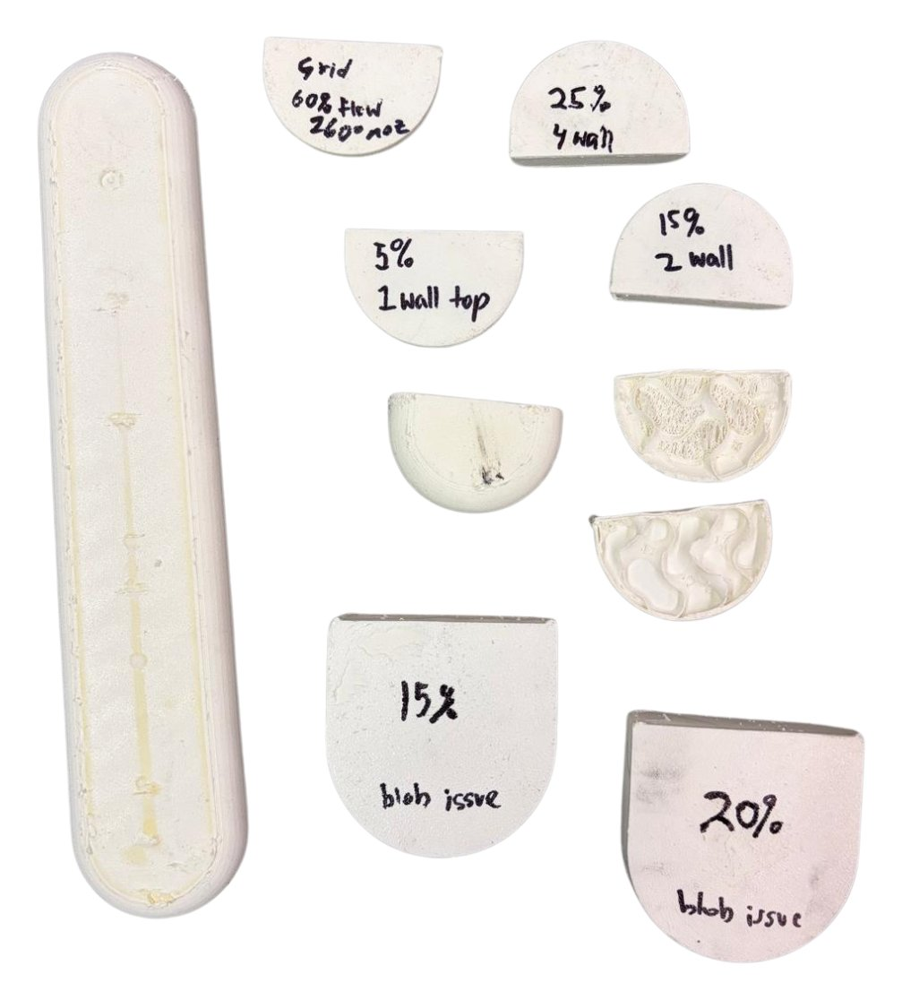
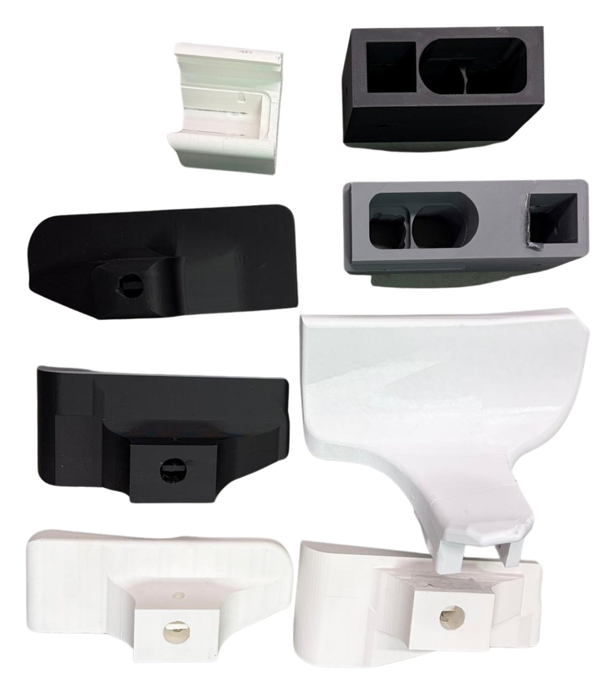

ReviMo
Advancing the mechanical design of the assistive robot ReviMo Niko toward production.
Overview
ReviMo Niko is an assistive robot. [TODO: 1–2 sentences on what Niko does and who it helps.] From May to August 2026 I was a Hardware Robotics Intern at ReviMo in Boston, MA, helping get Niko's mechanical design ready for production and optimized for manufacturing.
My role
I worked directly under the founder, advancing the mechanical design of ReviMo Niko toward production. Day to day I designed in Fusion 360, ran FEA, machined on the Amtrak CNC, printed on Bambu Lab printers, and programmed an Arduino UNO. [TODO: what you owned day to day, and who else you worked with.]
What I did
I redesigned 16 parts in Autodesk Fusion for strength, manufacturability, and 3D printing, cutting part mass by up to 36% and print time by 40%. [TODO: one example part — what changed in the design and why.]
One part I worked on was Niko's two-part scooping seat. I iterated it using different infills for comfort and different filament types, including various TPUs and PPA-CF.

I also optimized the armrest's design and print settings for print time, comfort, and finish, testing infill percentage, wall count, flow, and nozzle temperature.

To validate the designs, I built automated stress and fatigue test rigs with custom control and data-logging electronics, cutting testing time by 70%. During testing I caught a high-speed TPU part deforming at ~900 cycles and redesigned it to last thousands of cycles. [TODO: what caused the deformation and how the redesign fixed it.]
One rig tested backrests: it ran duty cycle tests to measure how backrests printed in different materials and infills deform over time.

I bench-tested 5 motors and actuators on torque, efficiency, noise, and heat to select the best fit for each application. I also tuned 3D print settings, materials, and casting molds to validate production processes, cutting production time by 85%.
Results
- 16 parts redesigned: up to 36% lighter and 40% faster to print
- Testing time cut by 70% with automated stress and fatigue rigs
- A TPU part that deformed at ~900 cycles redesigned to last thousands of cycles
- Production time cut by 85% through tuned print settings, materials, and casting molds
[TODO: what you learned, or where Niko is now.]